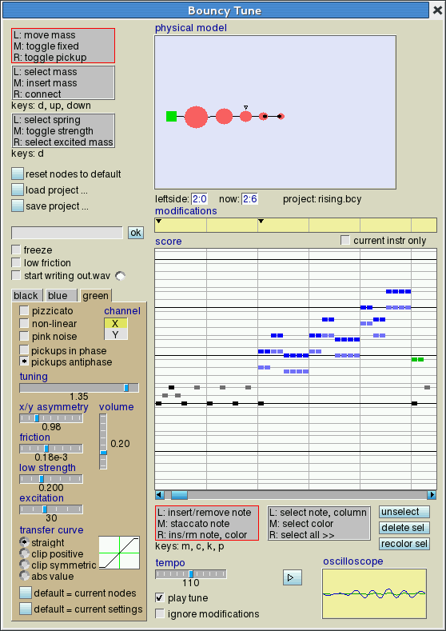
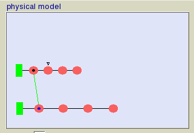
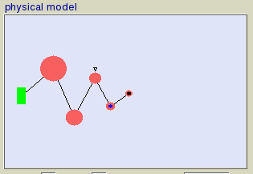
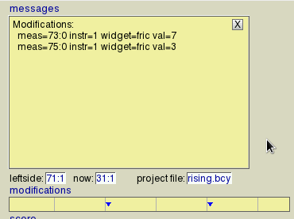

Bouncy Tune

Last updated: jan 2012
Physical modelling is a way to simulate musical instruments. This application uses this technique, and
also offers the possibility to create tunes. A warning in advance: physical modelling it compute-intensive,
your old box probably won't handle it.

A physical model consists of "masses", connected with "springs". These are visible in the upper window, and have
an intern equivalent to produce the sound: what you see is what you hear. There are 3 instruments, where the masses
can move in the X and the Y direction. In the audio model the X and the Y movements are sent to the left and the
right stereo channel respectively. There are 2 pickup points, the small black dots left and right
from the mass centers in the graphical model.
When playing a tune, one of the masses is excited, at the point that is indicated by a small triangle.
But first, let's listen to some sounds. Start the program with no options:
./bouncy-tune
and click the play button (indicated by a triangle, or a red square when clicked).
Now move one of the masses with the mouse, then release it.
You will hear a rather weird sound, that if analyzed consists of harmonics that are not very evenly spaced.
Because of this our ears cannot deduce the pitch exactly, so the distinction between consonant and
dissonant harmonies is kind of blurred.
Editing the physical model
The masses and springs can be modified, using one of three mouse modes that are controlled by the 3 grey
choice buttons at the left. Sound is heard at mouse-down or mouse-up provided that the play button is active.
- Move and modify the masses
-
- left button:
Move a mass, then released it. The masses will start to oscillate.
- middle button:
Toggle the selected mass between fixed and moving. The fixed state is indicated by a green rectangle,
which can be moved, but does not participate in the oscillation.
- right button:
If the mass is used as a pickup, it will loose this function, and vice versa. Notice how the generated sound
changes. If clicking slightly left from the center the left pickup is affected, else the right one.
- Edit masses and springs
-
- left button:
Select a mass, indicated by a black circle around it. Three keyboard keys have an effect:
- up arrow: the mass will be increased with a factor 1.4, yielding a lower frequency.
- down arrow: the mass will be decreased with a factor 1.4, yielding a higher frequency.
- D key: the mass is deleted, together with its connected springs.
- middle button:
A new mass is created.
- right button:
The mass is connected with a spring to a previously selected mass.
- Modify the springs, choose excitation point
-
- left button:
Select a spring, indicated by a small circle (which has no further use). If the D key was pressed,
then the spring will be deleted.
- middle button:
Springs exist in 2 strength's: nominal (black line) or weakened (green line). You can toggle between these states
using this button. The value of the weakened springs can be controlled by slider low strength.
Weakened strings are useful to couple 2 equal mass-spring combinations, e.g. as follows:

If the pickup point and the excitation point are on different mass-spring
combinations, then the generated sound will have a slow attack. Also the generated sound
will be less steady.
- right button:
Select the excitation point. This is only relevant if a tune is played (when checkbox play tune enabled).
Beneath the mouse-mode choice buttons there are 5 buttons and 3 checkboxes.
- reset to default:
The inverse of the foregoing.
- load project ...:
(Re)read a project file.
- save project ...:
The complete configuration (together with the tune that you created) is written
to a file. The name of this file can be choosen in the dialog box beneath. The project file
is more or less human readable, and can be called as an option later.
- freeze:
The graphical model will not be animated, so you can modify it at ease:

- low friction:
The frictional losses in the graphical model are much higher than in
the audio model. Enabling this checkbox has the effect that both loss values are made equal,
yielding a seemingly endless oscillation in the graphical model.
- start writing out.wav:
After enabling this checkbox, the small lamp symbol will turn to green, indicating that the program
is ready to record, provided that playing mode is on.
The recording starts after you moved a mass and released it, the lamp will then
turn to red. This goes on until you uncheck the checkbox, or until the playing mode is switched off.
A file out.wav is created.
If a tune is being played (checkbox play tune enabled, as will be described later), then
the recording is started by the play button and stopped when the end of the tune has
been reached, or the play button has been disenabled.
Instrument control panels
The 3 tabbed panels each contain the following controls:
- pizzicato:
Normally, during the playing of a note, the friction in the physical model is zero, so long notes
can be played. If this checkbox is enabled, then the friction is as set by slider friction from
the beginning of the note.
- non-linear:
The force from the springs to the masses will be increased at higher signal level, yielding very
weird sounds.
- pink noise:
If enabled, then pink noise will be injected at the excitation point.
- pickups in-phase
pickups anti-phase:
If both pickups are present, then x and y signals are sent in-phase/anti-phase to them. This yields
a different sound spectrum. If none is selected, then x signals go to the left channel, y signals
to the right.
- tuning:
As stated in the introduction, the audible pitch of an instrument cannot be descerned very well.
With this slider you can control how the 3 different instruments are sounding in combination.
- x/y asymmetry:
Movement of the masses in the X and the Y direction is independent inside the physical model.
The movements
are translated into audio signals going to the left and right stereo channels. With this slider
the masses can be made different in the 2 directions, yielding interfering and richer sounds.
- friction:
The modelled losses in the springs can be controlled by this slider, and thus the decay of the
audio signal. The graphical model is not affected.
- low strength:
As stated before, springs come in 2 versions: nominal strength (black line), or weak strength
(green line). The actual strength in the last case can be controlled by this slider.
- excitation:
When playing a tune, the excited mass is driven by a pulse. The value of this pulse can be
controlled by this slider, thus acting as an output volume control, placed in front of the distorsion
control.
- volume:
Controls the sound volume, behind the distorsion control.
- transfer curve:
Non-linear distorsion can be applied to the audio signal. The transfer curve is shown in the
small window next to the radio button. The 2 heaviest distorsion modes are good for
percussive sounds.
- default = current nodes:
After modifying a mass-spring combination (enable checkbox freeze), you can make
the default locations of the masses equal to their current position.
- default = current settings.:
The current settings will be the default settings for this instrument, used when a tune
is started, and also used as starting values when a project is saved. Settings can be
modified during the playing of a tune, see chapter Modifications.
Playing and editing a tune
A new tune can be created in the middle window, where the horizontal lines denote the white keys of a piano.
If checkbox current instr only is enabled, then only the notes for the current instrument and the
current channel are colored, the other notes will be light grey.
The grey choice buttons beneath put the mouse behaviour in 2 different modes: enter notes, or select.
- Enter notes
-
- left button:
Clicking and releasing the button has the effect that 1 note unit is created. The color and the
associated instrument is dependent on which instrument panel (at the leftside) is selected. Each
instrument is splitted in 2 parts, equivalent to the X and Y direction in the graphical window.
The X part is shown in a dark color, the Y part in a lighter color. The choice widget at the
top of the instrument panel controls which part is current.
If the mouse button is dragged, then a longer note will appear.
If the clicking point is in the white part at the right side of the window, where there are no grey lines,
then the handle of the scrollbar beneath will become smaller, indicating that more area is available now.
If you click on an existing note, then it will be erased. Dragging also works, the erasing action
will stop at the end of the note.
- middle button:
The same operation, but when the button is released after dragging, a staccato note is created. This is
indicated by a somewhat shorter note unit at the end.
- right button:
With this button you can enter multiple note units, covering more then 1 instrument. These notes
are shown in a pink color. The instrument that is affected is the one of which the control
panel is selected and the X or Y channel is active. If an existing multiple note already contains
a component of the affected color, then this component will be erased.
If you want to know the components of a multiple note unit, press the I (= info) key and click
the note. Then the upper window is replaced by an information window, in which the note contents are listed.
- Select mode
-
Notes can be selected, which is indicated by a white spot within them. The selected notes then can be copied,
moved or deleted.
- left button:
If on a (multiple) note, select all components of this note unit and of the note units to the right,
until white space or until a note is staccato.
If on an already selected note, then this will be unselected until its end.
If the button is clicked on a place where there is no note, then all notes above and below will
be selected. Dragging the mouse then also works.
- middle button:
The same operation, but only the current color (the selected panel) is affected.
- right button:
Select all notes at the right side of the cursor.
- The keyboard keys
-
Some keys that have been pushed ahead of a mouse click invoke a specific action.
- M:
Move selected notes by dragging the mouse.
- C:
Copy selected notes by dragging the mouse. The new notes are in selection mode, the copied notes not.
- K:
(keep) Before releasing the mouse: disenable moving or copying.
- P:
(paste) Selected notes are copied at the location where the mouse is clicked (so not by dragging it).
The new notes are in selection mode.
- <ctrl> : Scroll the window contents horizontally by dragging the mouse.
This works more accurate then using the scrollbar.
If only a single component (one color) of the notes had been selected, then only this component will be affected.
If you loosed track: use the I key.
- The buttons
-
- unselect:
If one or more notes have been selected, then the background of this button is colored rose. If you click it,
all selected notes will be deselected, and the button color returns to light blue.
- delete sel:
All selected notes will disappear. If a single component (one color) had been selected, only this component
will be omitted.
- recolor sel:
The selected notes will be assigned to the instrument whose control panel is selected.
Maybe it's a good idea to practice for some time, entering notes and modifying them. Also entering, deleting and
replacing bigger blocks of notes should be doable.
Modifications while playing
The settings from the control panels can be modified at choosen moments in the course of a tune.
This is notified in
the modifications window by small triangles. To insert these signs:
- Go to the place in the score where you want a modification.
- Play the tune during a short time, so you know that all sliders etc. have their current value.
- Check ignore modifications.
- Select the panel that you want to modify.
- Twiddle the knobs and listen to the sound.
- Click in the modifications window above the place where you want the modifications to take effect.
No triangle sign will appear if you did not really introduce a modification.
- Uncheck ignore modifications and listen to the final result.
A triangle sign can be removed by clicking it while the D key was pressed.
It is the intention that sliders and checkboxes always show their current value while playing. So this is
what happens when you hit the play button somewhere in the middle of a tune:
1 - All settings from the start are restored.
2 - All modifications upto the starting location are applied.
3 - The sliders etc. are drawn with their current value.
Clicking the default = current settings button will have the result that the current setting of
all control panels will be the new default state that is valid at the start of playing.
All modifications will be listed when the I key is pressed and the mouse is clicked somewhere
in the modifications window. This might look as follows:

Replaying from a project file
An existing tune plus settings can be loaded from a project file:
./bouncy-tune rising.bcy
Then enable checkbox play tune at the bottom, and click the play button. The label of this
button will turn from a triangle to a square, indicating that now it's a stop button. The tune will
start from the left side of the score window. The current measure
is shown after the now: label.
If checkbox current instr only is enabled, then only the current channel of the current instrument
will be heard.